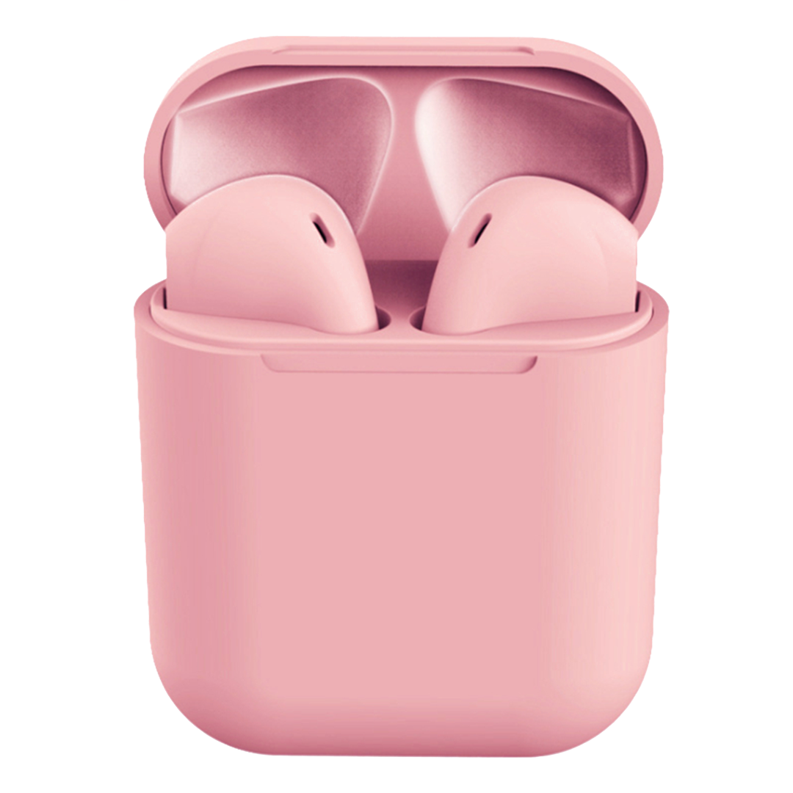
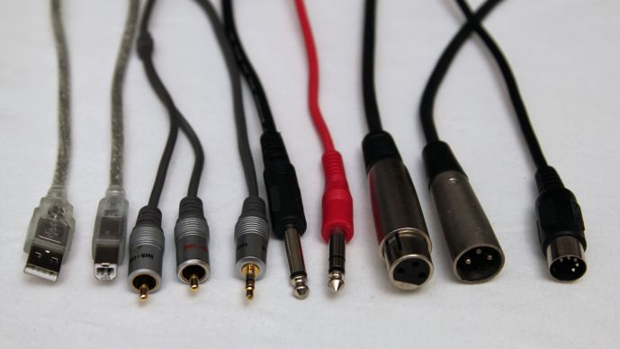
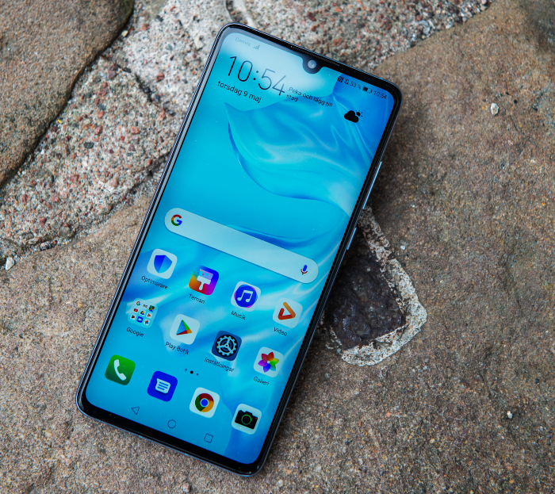
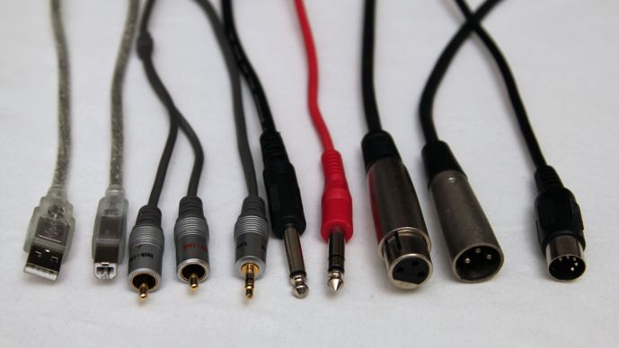
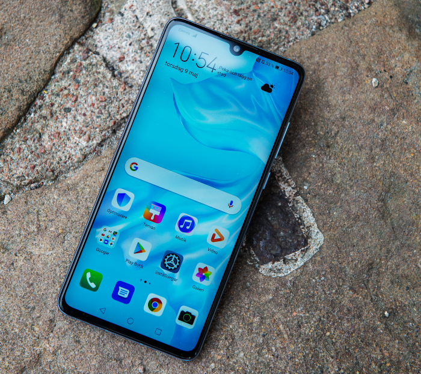

5G-hastighet. A14 Bionic – det snabbaste chippet i en smartphone. En OLED-skärm från kant till kant. Ceramic Shield med fyra gånger bättre skydd mot tappskador. Och nattläge på alla kameror. iPhone 12 har verkligen allt – i två perfekta storlekar.

Airpods - Rosa
AirPods 12 – Rosa har en tydlig inspiration från Apple Airpods vilket gör inPods till ett perfekt alternativ för dig som inte vill spendera för mycket pengar på Apples trådlösa hörlurar. Med våra inPods får du kvalitet till ett bra pris och
dessutom i mycket coolare färger en vanliga Apple Airpods. Komplett trådlösa hörlurar i roliga kulörer som passar perfekt för dig som vill njuta av helt trådlösa Bluetooth hörlurar på din promenad eller under ditt hårda gympass! Dom trådlösa
hörlurarna är lätta att ansluta och passar alla olika enheter som iOS och Android!
 


